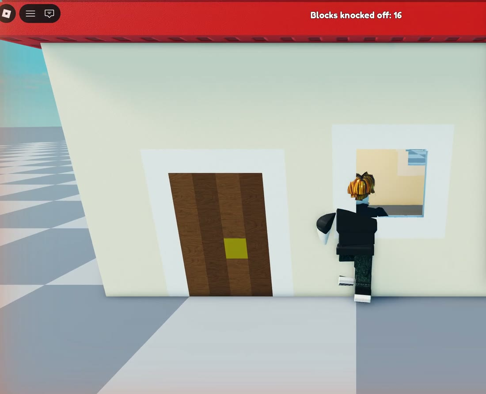
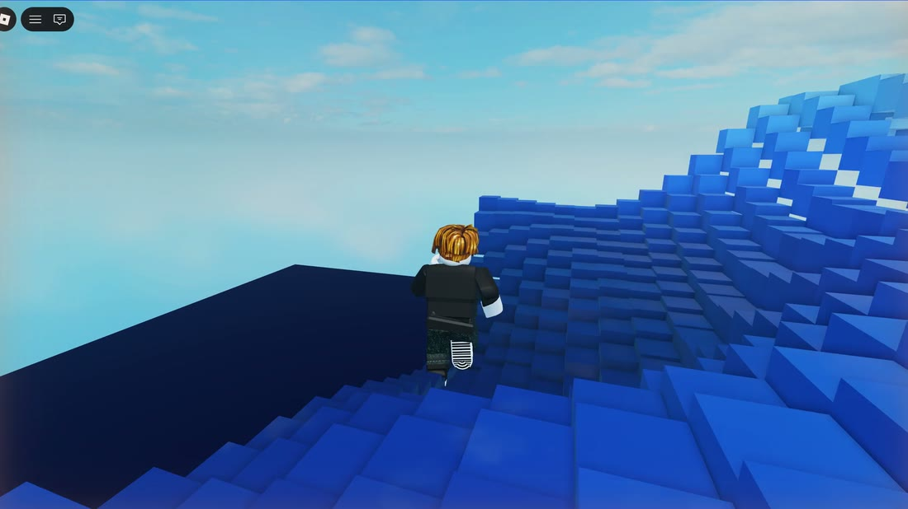
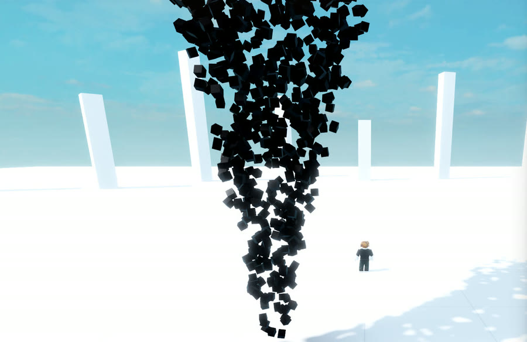
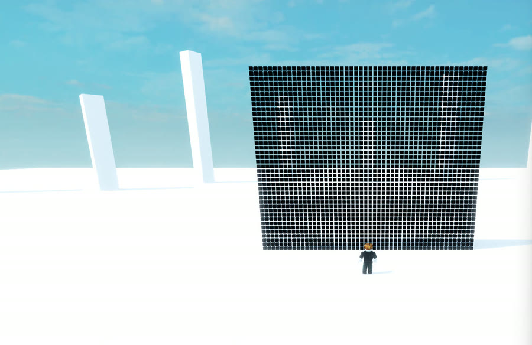
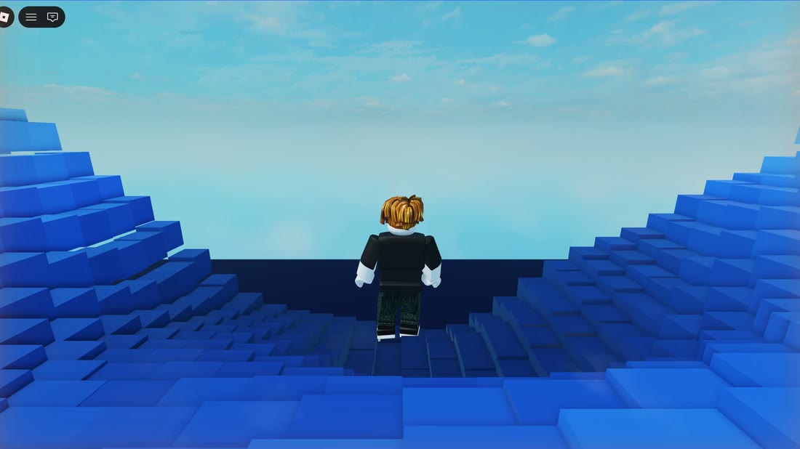
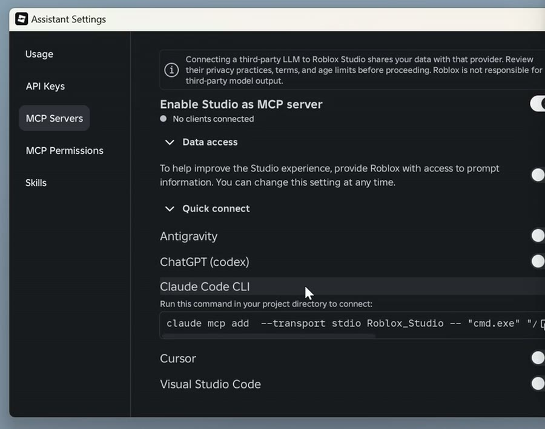
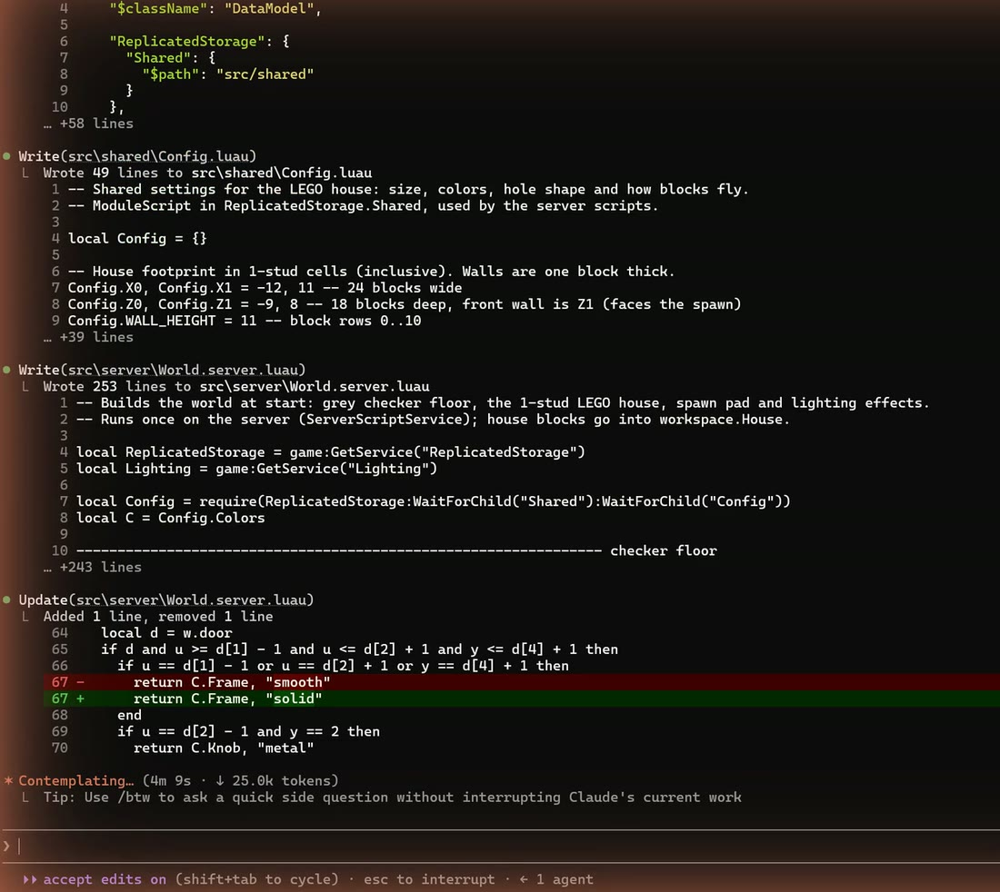
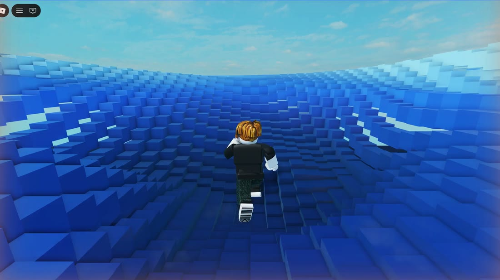

SMARTCODE
Roblox AI Game Kit · Version 2.0
Build Roblox games
with Claude Code.
You paste one prompt. Claude Code writes every script, builds the map and hands you a game file you open in Roblox Studio and play. This guide is the exact setup and the exact prompts behind three games from our reels - with the finished games in your download.



3 gamesbuilt and tested with Claude Code
~3 minfrom prompt to game file
0lines of code you type
Personal use only - please do not share or resell this guide or the starter files. Results are not guaranteed. Not affiliated with Roblox or Anthropic. Free updates: smartcode.academy/kit/access
What you'll build
Three games. Three prompts.
Each one is a physics effect our viewers kept replaying. Each one came from a single prompt to Claude Code - and the finished version is in your starter files, so you can play it before you build it.
GAME 01
LEGO house
A cozy house made of about 2 000 one-stud blocks. Run into a wall and the blocks break off and fly with real physics, leaving a hole the shape of your character.
Server physicsHit counter
GAME 02
Vortex floor
A floor of 14 400 blue blocks. Wherever you walk it sinks into a spinning whirlpool, darker in the middle, and springs back up behind you.
14 400 blocksSmooth on the client

GAME 03
Nanobot swarm
2 000 black cubes swirl around you. Click the floor and they become a tornado. Press E and they build a giant wall. The game from our reel seen by 4.4M people.
2 000 botsClick · E · F
Inside
Your route
- 01What you needp. 4
- 02Setup in 5 steps - Claude Code, Rojo, rules file, Studiop. 5
- 03How Claude Code makes a game - for total beginnersp. 8
- 04Game 1 · LEGO housep. 10
- 05Game 2 · Vortex floorp. 12
- 06Game 3 · Nanobot swarmp. 14
- 07Let Claude test your gamep. 16
- 08Fix-it prompts and troubleshootingp. 17
- 09Write your own game promptsp. 18
- 10More games to tryp. 19
- 11Publish and earn Robux the Roblox wayp. 20
- 12The reel playbookp. 21
- 13Prompt cheat sheetp. 22
Your starter files. Next to this guide you downloaded roblox-ai-starter.zip. Inside: the rules file CLAUDE.md and the three games as full project folders - every script Claude wrote plus a ready game.rbxlx. Unzip it, double-click a game.rbxlx, press F5. That is your target.
How to use this guide
- Play the finished games first (2 minutes). You will know what “done” looks like.
- Do the setup once (about 15 minutes). Chapter 02.
- Rebuild game 1 yourself with the prompt, then change it with the follow-ups. That is where it clicks.
- Then games 2 and 3, then your own idea with the prompt formula in chapter 09.
Chapter 01
What you need
Three tools. Two are free. One is a paid Claude plan you buy from Anthropic - it is not part of this kit.
FreeRoblox Studio
Where you open, play, test and publish the game. Windows or Mac.
Paid planClaude Code
The AI that writes the whole game in a terminal window. Needs Claude Pro or higher.
FreeRojo
Turns the code files Claude writes into one Roblox game file: game.rbxlx.
Computer only. Roblox Studio and Claude Code run on Windows and Mac. You can read this guide on a phone, but you build on a computer.
The whole workflow at a glance
1New folder, open Claude Code in it
2Paste a game prompt, wait 2-5 min
3Double-click game.rbxlx, press Play
4Ask Claude for changes, play again

The vortex floor in Play mode - step 3 of the loop.
Chapter 02 · Setup
Setup in 5 steps
About 15 minutes, once. After this every new game is a folder and a prompt.
1
Step 1 of 5
Install Roblox Studio
Go to create.roblox.com, log in with your Roblox account, click Start Creating and install Studio. Open it once and log in.
2
Step 2 of 5
Install Claude Code
Open a terminal - Windows: press Win, type PowerShell, Enter. Mac: open Terminal. Paste the line for your computer:
Terminal
# Windows (PowerShell)
irm https://claude.ai/install.ps1 | iex
# Mac
curl -fsSL https://claude.ai/install.sh | bash
Close the terminal, open a new one, type claude and press Enter. A browser window asks you to log in with your Claude account - use the account with your paid plan.
Something different on screen? Anthropic updates the installer from time to time. The current steps are always at claude.ai/code.
Chapter 02 · Setup
3
Step 3 of 5
Rojo - let Claude install it
Rojo is the free tool that packs Claude's code files into one Roblox game file. You don't need to install it by hand: in the Claude Code window, paste
You → Claude Code
Install Rojo 7 on this computer so the command rojo works in any terminal, then run rojo --version to check it.
Prefer to do it yourself? Download Rojo from github.com/rojo-rbx/rojo/releases and put it on your PATH.
4
Step 4 of 5
Add the rules file
Make one folder for all your games, for example Documents\roblox-games. Copy CLAUDE.md from the starter files into it. Claude Code reads this file automatically every time you start it there or in a folder inside it.
What the rules file teaches Claude - so your prompts can stay short:
| Rule | Why it matters |
|---|
Every game is a Rojo project: src/server, src/client, src/shared | You always know where things are. |
| Build the world from code at server start | One build gives a finished game, not an empty map. |
| Thousands of parts: create in batches, anchor what doesn't move, keep under ~15 000 | Your game stays smooth. |
| Looks-only effects run on the client; game rules run on the server | No lag, no cheating. |
Always finish with rojo build → game.rbxlx | You get a file you can double-click. |
Chapter 02 · Setup
5
Step 5 of 5
Connect Claude to Roblox Studio
Roblox Studio has a built-in MCP server: a door that lets Claude Code start Play, read errors, take screenshots and walk your character - so it can test your game itself (chapter 07).
- Open Roblox Studio and any place. Open Assistant → … → Manage MCP Servers (Assistant Settings → MCP Servers).
- Switch on Enable Studio as MCP server. We switch off the data-sharing option under it.
- Under Quick connect open Claude Code CLI and copy the command it shows - it is the right one for your computer. On Windows it looks like this:
Terminal
claude mcp add --scope user --transport stdio Roblox_Studio -- cmd.exe /c "%LOCALAPPDATA%\Roblox\mcp.bat"
claude mcp list
Roblox_Studio: cmd.exe /c %LOCALAPPDATA%\Roblox\mcp.bat - ✓ Connected

Assistant Settings → MCP Servers in Roblox Studio.
Green light. When it works, Studio shows a green indicator with the number of connected clients.
Only connect apps you trust. A connected app can read and change the places you have open. Claude Code only acts when you ask it to.
Done. From here on, every game is: new folder → claude → prompt → play.
Chapter 03 · For total beginners
How Claude Code makes a game
You don't need to understand code. You only need to know where things are and what to say.
1 · The folder
Each game lives in its own folder inside your games folder. Claude only works inside the folder you start it in.
Windows
right-click the folder → Open in Terminal
claude
2 · The terminal
Claude Code is a chat in that terminal. You paste a prompt and press Enter. It plans, writes files, runs Rojo and tells you in plain words what it made.
It asks before running unusual commands - read the question and pick Yes when it is about your game folder.
3 · What it writes
lego-house/
├─ default.project.json ← map of the game
├─ src/server/ ← rules: world, physics
├─ src/client/ ← what each player sees
├─ src/shared/ ← settings for both
└─ game.rbxlx ← the file you open
Server scripts run once for the whole game - they decide what is true: a wall broke, the swarm should form a tornado.
Client scripts run on each player's computer - smooth animation and on-screen text.
Shared holds the settings file. Every game in this kit has one, full of numbers you can change.
4 · What “rojo build” does
Claude writes plain text files. Roblox Studio wants one game file. rojo build packs the folder into game.rbxlx. Claude runs it for you at the end of every change.
Chapter 03 · For total beginners
Change it, play again

Claude Code writing the LEGO house: the project map, the settings file, the world script - then fixing a detail on its own.
Ask for changes in plain words.Stay in the same Claude Code window: “make the hole bigger”, “add a counter”. It edits the files and builds game.rbxlx again.
Reopen to see the change.Close the game in Studio (don't save) and double-click game.rbxlx again. The new build is in there.
Undo with /rewind.If a change made it worse, type /rewind and pick the moment before it.
Read the Output window.In Studio: View → Output. Red lines are errors. Copy one into Claude with “fix this”.
One change at a time. Ask for one thing, play it, then ask for the next. Five changes in one message is how games break.
Chapter 04 · Game 1 of 3
LEGO house
Running into the front wall: blocks break off in the shape of the character.

What happensYou spawn facing a cream house with a red roof, chimney, windows and a door. Run into any wall: the blocks in front of you fly off with physics and disappear after 6 seconds. A counter shows how many you knocked off.
You → Claude Codenew folder · lego-house
Make a Roblox game in this folder: a cozy voxel house made of 1-stud blocks - cream walls, red roof, a chimney, windows with white frames, a wooden door - standing on a big grey checker floor. When the player runs into a wall, the blocks in front of them break off and fly away with real physics, like the house is made of LEGO. The hole should be about the size of the player, so they can run straight through the house and out the other side, leaving a player-shaped hole. Fallen blocks disappear after 6 seconds. Spawn the player outside, facing the house. Build it as a Rojo project and build game.rbxlx.
Game 1 · LEGO house
What Claude built
| File | What it does |
|---|
server/World.server.luau | Builds the checker floor, the 1-stud house (about 2 000 blocks), the spawn pad and lighting. |
server/Breaker.server.luau | Breaks a player-shaped hole in front of a running player; removes fallen blocks. |
client/Hud.client.luau | Shows “Run into the house!” and the knocked-off counter. |
shared/Config.luau | All the numbers below. |
Numbers you can change shared/Config.luau
| Setting | Now | Try |
|---|
WALL_HEIGHT | 11 rows | 20 for a tower house |
X0, X1 / Z0, Z1 | 24 × 18 blocks | a bigger house (more blocks = more work for the PC) |
FLY_SPEED_MIN / MAX | 20 / 36 | 60 / 90 for explosive walls |
FALLEN_LIFETIME | 6 s | 20 to leave a pile of rubble |
REACH | 1.5 studs | 3 if the wall stops you before it breaks |
Make it yours - paste one at a time
Follow-up
Make the hole twice as big and make the blocks fly twice as far.
Follow-up
Build a street of 5 houses in different colours, and show a counter of blocks knocked off at the top of the screen.
Follow-up
Add a big red button on the floor. When a player steps on it, every house rebuilds itself block by block in 10 seconds.
Remix ideas: a castle you smash, an ice house that shatters, a destructible city block, a race through 10 houses.
Chapter 05 · Game 2 of 3
Vortex floor
The floor bends into a funnel around the player and follows every step.

What happensA 120 × 120 floor of blue blocks. Where you stand it sinks into a smooth whirlpool with spinning ripples on the rim; deeper blocks turn darker. Move and the funnel follows; the floor behind you springs back with a little bounce.
You → Claude Codenew folder · vortex-floor
Make a Roblox game in this folder: the ground is a big square floor made of blue blocks, 1 stud each, about 120 x 120 of them. Wherever the player walks, the floor sinks into a smooth whirlpool funnel around them, like they stand in a vortex: the blocks under the player sink deepest, the rim of the funnel ripples and spins. When the player moves, the funnel follows them and the floor behind springs back up. Blocks get darker the deeper they sink, with bright light-blue on the rim. Soft sky fog. It must run smoothly. Build it as a Rojo project and build game.rbxlx.
Game 2 · Vortex floor
What Claude built
| File | What it does |
|---|
server/BuildFloor.server.luau | Builds the 120 × 120 floor (14 400 blocks) and invisible edge walls once at start. |
client/Vortex.client.luau | Every frame, moves only the blocks near players with BulkMoveTo - the reason it stays smooth. |
shared/VortexConfig.luau | All the numbers below. |
Why it doesn't lag. 14 400 parts is a lot. Claude moves only the blocks near the player each frame, on the player's own computer. Ask for this trick in your own prompts: “only animate what is near the player, on the client”.
Numbers you can change shared/VortexConfig.luau
| Setting | Now | Try |
|---|
Radius | 17 | 30 for a giant whirlpool |
Depth | 9 | 20 for a deep pit |
SpinSpeed | 4.5 | 10 for a crazy spin |
Damping | 7 | 3 for a bouncy floor |
BaseColor / RimColor | blue / light blue | lava, slime, gold… |
Make it yours
Follow-up
Turn the floor into lava: orange blocks, a glowing yellow rim, and the player slowly loses health at the bottom of the funnel.
Follow-up
Make the funnel twice as deep and spin faster for 2 seconds every time the player jumps.
Follow-up
Add 3 friendly robots that wander around the floor, each with its own smaller funnel.
Remix ideas: a trampoline floor, a quicksand escape, a ripple pond, a dance floor that pulses with every step.
Chapter 06 · Game 3 of 3
Nanobot swarm
The cloud around the player, and the tornado after a click on the floor.
Controls
Click the floor - the swarm rushes there as a 70-stud tornado (ends after 15 s). E builds a 50 × 40 wall in front of you, E again knocks it down. F calls the swarm back.
You → Claude Codenew folder · nanobot-swarm
Make a Roblox game in this folder: a swarm of 2 000 small black metal cubes - nanobots - lives on a white floor. The swarm flows after the player like a living cloud, swirling around them and never passing through each other in a messy way. Click anywhere on the floor and the swarm rushes there and forms a tall spinning tornado. Press E and the swarm builds a giant cube wall in front of the player, press E again and it falls apart back into the cloud. Run the movement on the client so it stays smooth. Build it as a Rojo project and build game.rbxlx.
We hit one snag. On our first try the cloud flew right around the camera and covered the screen. One follow-up fixed it - paste it if you see the same:
Fix
When the game starts, the swarm cloud flies right around the camera and covers the whole screen. Keep the cloud a bit in front of and around the player at chest height, never between the camera and the player, and start the camera zoomed out to about 25 studs so you see the player and the whole cloud. Rebuild game.rbxlx.
Game 3 · Nanobot swarm
What Claude built
| File | Job |
|---|
client/Swarm | Moves and draws all 2 000 cubes every frame |
client/Controls | Click, E, F, hint bar |
client/Camera | Starts the camera zoomed out |
server/SwarmServer | Decides: follow, tornado or wall |
server/World | White lab, grid, pillars |
Numbers you can change shared/SwarmConfig.luau
| Setting | Now | Try |
|---|
COUNT | 2 000 | 1 500 if it stutters, 3 000 on a strong PC |
CUBE_SIZE | 0.75 | 0.4 for a fine dust cloud |
TORNADO_HEIGHT | 70 | 150 for a sky-high storm |
TORNADO_LIFETIME | 15 s | 60 to keep it spinning |
WALL_COLS × WALL_ROWS | 50 × 40 | keep it ≥ COUNT |
Make it yours
Follow-up
Make the cubes glow neon blue at night, and let the tornado pick up anything loose on the floor.
Follow-up
Press Q and the swarm forms a giant copy of my character that copies my moves.
Follow-up
Add a second swarm in red that chases the player, and the black swarm flies between them to block it.
Remix ideas: a bee swarm, a flock of birds, magic sand that builds stairs, a robot army that follows the leader.
Chapter 07
Let Claude test your game
With Studio connected (setup step 5), Claude can press Play, walk the character, take screenshots and read the errors - by itself. Open the game in Studio first, then in its Claude Code window paste:
You → Claude Code
Roblox Studio is open with this game. Use the Roblox Studio tools: start Play, walk the character straight into [the house], take a screenshot, read the Output for errors, then stop Play. Tell me in plain words if [the wall broke] and if anything is wrong.

What happened when we ran itClaude pressed Play, walked the character into the house, reported 18 blocks broken, took a screenshot, read the Output and found no errors in the game's own scripts. Then it stopped Play.
What Claude can do in Studio
- start and stop Play
- walk the character, press keys, click
- take screenshots of the game
- read the Output window
- read and edit scripts, run Luau
Best habit: after every bigger change, ask Claude to test before you do.
Chapter 08
Fix-it prompts & troubleshooting
| You see | Paste this in the game's Claude Code window |
|---|
| rojo build fails | rojo build fails with this error: [paste the error]. Fix it and build game.rbxlx again. |
| Play starts, nothing happens | I pressed Play and [nothing happens]. Use the Roblox Studio tools to start Play, read the Output, and fix every error you find. |
| Red text in Output | The Output shows this error: [paste]. Explain it in one sentence and fix it. |
| It stutters / low FPS | The game stutters. Find everything that runs every frame, move only the parts near the player, and keep the total part count under 15 000. |
| Wrong spawn / falling through | The player spawns [inside the house / under the floor]. Move the spawn point to [where] and make sure the player lands on solid ground. |
| Effect covers the camera | [The effect] covers the camera. Keep it in front of the player, never between the camera and the player, and start the camera zoomed out. |
| Too hard / can't get through | Players can't [get through the wall]. Make it easier and test it with the Roblox Studio tools. |
| Looks plain | Make the game look better without making it slower: nicer lighting, a sky, fog in the distance and colours that fit [the theme]. |
| A change broke it | Type /rewind and go back to before the change. Then ask again, in smaller steps. |
| You want to learn | Explain what each script in this game does in simple words, and tell me which numbers I can change to make it feel different. |
Change the [brackets]. They are your words: what you see, where you want it, your theme.
Chapter 09
Write your own game prompts
All three prompts in this kit have the same shape. Copy the shape, swap the idea.
1The world. What it looks like: materials, colours, size, light.
2The action. What happens when the player does X.
3The feel. Smooth, bouncy, scary - and how it resets.
4The ending. “Build it as a Rojo project and build game.rbxlx.”
Example · from idea to prompt
Idea: “a floor that turns to ice where I walk”.
Your prompt
World: Make a Roblox game in this folder: a big grassy hill made of 1-stud green blocks under a winter sky. Action: Every block the player steps on freezes into slippery blue ice, and the player slides on ice. Feel: Ice cracks and melts back to grass after 8 seconds, with a soft crackle effect. Keep it smooth. Ending: Build it as a Rojo project and build game.rbxlx.
Example · a game, not just an effect
Idea: “escape the rising lava, with checkpoints”.
Your prompt
Make a Roblox game in this folder: a tall tower of floating platforms over a lava sea. The lava rises slowly; players jump up the platforms to escape. Every 10 platforms there is a checkpoint flag. Show the height reached on screen and a leaderboard of the best height. If the lava touches a player, they respawn at their last checkpoint. Build it as a Rojo project and build game.rbxlx.
These two are examples of the formula - we did not build them. Try them, and use chapters 07-08 if something needs fixing.
Chapter 10
More games to try
Three more ideas from our reels, written with the same formula. Paste each into a new folder.
Tested Wind & grass
You → Claude Code
Make a Roblox game in this folder: a huge field of tall green grass under a bright sky. Every grass blade is its own thin part, thousands of them, with slightly different heights and shades of green. Wind waves roll across the field so the blades sway in gusts. When the player walks through, the grass bends away from them and slowly stands back up after they pass. Keep it smooth: only animate the blades near the camera, and do it on the client. Build it as a Rojo project and build game.rbxlx.
Claude built a field of 14 000 blades from this prompt on our first try.
Idea Neon bridge
You → Claude Code
Make a Roblox game in this folder: a long suspension bridge at night over dark water, with two tall towers and glowing cables. The road is made of tiles; the tile under the player lights up in bright cyan neon and the light trails behind them, fading after a second. Neon lamps along the sides pulse slowly. Add fog, a starry sky and the city lights far away. Spawn the player at one end of the bridge. Build it as a Rojo project and build game.rbxlx.
Idea Red sinkhole
You → Claude Code
Make a Roblox game in this folder: the ground is a big floor of red blocks, 1 stud each. When the player stands still for a second, the floor around them starts to crack and collapses into a deep round sinkhole - the blocks fall down with physics, ring by ring, and the player falls in. At the bottom there is a trampoline that throws them back up to the surface. After 10 seconds the hole fills back in, block by block. Build it as a Rojo project and build game.rbxlx.
Two more follow-ups for games 1 and 2. LEGO house: “When the player holds Shift and runs, the wall breaks in big chunks of 4 × 4 blocks instead of single blocks.” Vortex: “Give every player their own funnel colour, and when two funnels touch, the floor between them bounces up.”
Chapter 11
Publish & earn Robux the Roblox way
Publish checklist
| Step |
|---|
| ☐ | Play it for 5 minutes yourself, then ask Claude to test it (chapter 07). |
| ☐ | In Studio: File → Publish to Roblox. A clear name and a one-line description. |
| ☐ | An icon and a thumbnail - a screenshot of the best moment works. |
| ☐ | Game Settings → Permissions → Public when you are ready. |
| ☐ | Fill in the maturity questionnaire honestly. |
| ☐ | Open it in the Roblox app on your phone and play once there too. |
Ways Roblox lets games earn
PassesA one-time purchase for a lasting perk: a skin for the swarm, a second house colour. You create them on the Creator Dashboard.
Developer productsThings players can buy more than once, like a tornado refill. Also created on the Creator Dashboard.
You → Claude Code
I created a pass with ID [number] called [Blue Swarm]. When a player owns it, make their swarm cubes glow blue. Use MarketplaceService, check ownership on the server, and add a button that opens the purchase prompt.
Be fair and follow Roblox rules. Sell fun and looks, not power that ruins the game for others. No promises: most new games earn little at first, and results are not guaranteed.
Chapter 12
The reel playbook
Our Roblox reels got 57M views in 90 days. The nanobot swarm reel alone reached 4.4M people. This is how we film them.
| Format | What it shows | Why it works |
|---|
| “1 prompt = 1 game” | The prompt on screen, then the game | People want the prompt - that's your comment bait. |
| Satisfying physics | Walls breaking, floors sinking, swarms flying | Easy to rewatch; replays get pushed. |
| “AI vs student” | Two versions side by side | A built-in question makes people comment. |
How to film
- Record Play mode vertical, 1080 × 1920. Hide Studio panels.
- The first 2 seconds decide everything: start on the most surprising frame, with text on screen.
- 15-30 seconds, every pause cut, captions word by word.
- End with a question: “Would you play this?”
Hooks you can use
- “AI built this Roblox game from one prompt.”
- “I gave Claude one sentence. This is the game.”
- “This floor reacts to every step.”
- “3 minutes, 1 prompt, 14 000 blocks.”
- “2 000 nanobots. One click.”
- “I can run through this house.”
- “Rate this AI game 1-10.”
- “POV: you publish your first Roblox game.”
Results are not guaranteed. Views depend on your game, your posting and the platforms.
Chapter 13 · Keep this page open
Prompt cheat sheet
| When | Type / paste |
|---|
| Start a game | New folder → right-click → Open in Terminal → claude |
| New game | Make a Roblox game in this folder: [world]. When the player [action], [what happens]. [How it feels]. Build it as a Rojo project and build game.rbxlx. |
| Play it | Double-click game.rbxlx → F5 |
| Change it | Make [thing] [bigger / faster / another colour] and rebuild game.rbxlx. |
| Add a feature | Add [feature]. Keep everything else the same. |
| Test it | Use the Roblox Studio tools: start Play, [do X], take a screenshot, read the Output, stop Play, tell me what's wrong. |
| Error | The Output shows: [paste]. Fix it and rebuild. |
| Lag | Only animate what is near the player, on the client. Keep parts under 15 000. |
| Undo | /rewind |
| Learn | Explain each script in simple words and list the numbers I can change. |
| Look better | Nicer lighting, sky and fog without making it slower. |
| Publish | Studio → File → Publish to Roblox |
SMARTCODE
Roblox AI Game Kit, version 2.0. New versions of this guide and the starter files: smartcode.academy/kit/access. Personal use only - please do not share or resell. Results are not guaranteed. Claude Code requires a paid Claude plan sold by Anthropic. Not affiliated with Roblox or Anthropic. Roblox and Roblox Studio are trademarks of Roblox Corporation; Claude is a trademark of Anthropic.